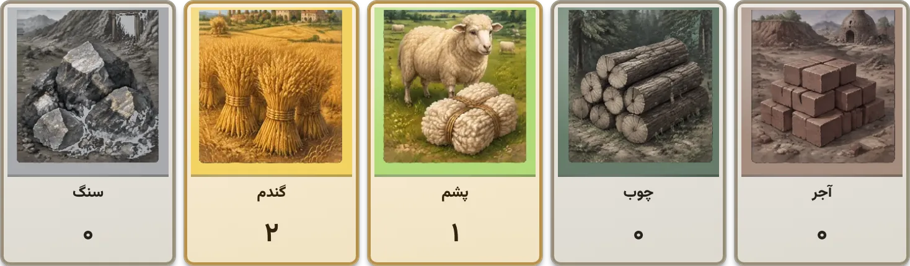

منوبت شما۰:۴۲تولید ۸: نیلوفر ۱ پشم
بانک۱۹ آجر۱۵ چوب۱۲ پشم۱۶ گندم۱۸ سنگکارت توسعه در دسته ۲۴
معامله کنید، بسازید و در پایان نوبت را تمام کنید۰:۴۲زمان نوبت شما

نوبت ۲۵: مینامینا تاس ریخت: ۳ + ۵ = ۸تولید: نیلوفر ۱ پشمننیلوفر۱ دقیقههشت کارت دارم، کسی گندم نمیخواد؟
آآرشالان@مینا پشمت رو با سنگ عوض میکنی؟